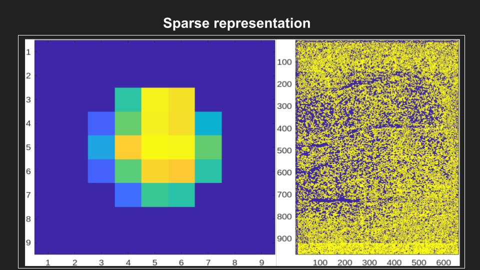

Segmentation and Deconvolution#
The flourescence of the proteins in our neurons is correlated with how active the neuron is. Turning this flourescence into “spikes” relies on several mathmatical operations to:
isolate neuronal activity from background activity (Source Extraction).
infer the times of action potentials from the fluorescence traces (Deconvolution).
Note
TERMS:
The term segmentation simply refers to dividing an image based on the contents of that image, in our case, based on neuron location. The term source extraction is more an umbrella term for all of the individual processes that produce a segmented image. The term deconvolution is a separate step applied to the resulting traces to infer spike times from flourescence values.
Before running segmentation, make sure you:
Understand the parameters and how they effect the output.
Confirmed no stitching artifacts or bad frames.
Validate your movie is accurately motion corrected.
{kind=link}
Source Extraction#
segmentPlane() contains the bulk of the computational complexity in this pipeline and will take significantly longer than the previous steps.
Inputs are covered in Parameters, with a few additional parameters. To understand these parameters, you have to understand a bit about what CNMF is trying to do. Much of work is about separating “good activity”, the flourescence changes that we can attribute to a single cell, vs “noise, which is everything else (including signal from other neurons). To do this, we take advantage of the fact that the slow calcium signal is typically very similar between adjacent frames. See this blog post for a nice discussion on shot noise calculations and poissson processes.
The speed of transients, or the time it takes for the neuron to fully glow (rise time) and unglow (decay time), is a very important metric used to calculate several of the parameters for CNMF.
In particular, speed of transients relative to the frame rate can be thought of in terms of “how many frames does it take my calcium indicator to undergo a complete transients cycle”.
cnmf_options#
This is a structured array containing key:value pairs of all of your CNMF parameters. See the example parameters in the LBM_demo_pipeline.
If this parameter is not included, they will be calculated for you based on the pixel resolution, frame rate and image size in the metadata.
For example, Tau is a widely talked about parameter being the half-size of your neuron.
This is calculated by default as \((7.5/pixel_resolution, 7.5/pixelresolution)\).
There are several different thresholds, indicating correlation coefficients as barriers for whether to perform a process or not.
merge_thresh#
A correlation coefficient determining the amount of correlation between pixels in time needed to consider two neurons the same neuron.
The lower your resolution, the more “difficult” it is for CNMF to distinguish between two tight neurons, thus use a lower merge threshold.
This parameter heavily effects the number of neurons processed. It’s always better to have to many neurons vs too few, as you can never get a lost neuron back, but you can invalidate neurons in post-processing.
min_SNR#
The minimum “shot noise” to calcium activity to accept a neurons initialization.
Tau#
Half-size of your neurons.
Tau is the half-size of a neuron. If a neuron is 10 micron, tau will be a 5 micron.
In general, round up.
P#
The term autoregression indicates that it is a regression of the variable against itself. Thus, an autoregressive model of order p can be written as yt=c+ϕ1yt−1+ϕ2yt−2+⋯+ϕpyt−p+εt,
I dont know what that means, but that’s wikipedia. P = 1 is used when you have a fast indicator, for the reasons mentioned above regarding decay time. Use p=2 for slow indicators where you only expect 1-3 frames.
Example#
Here is a look at all of the parameters you can provide to CNMF:
options = CNMFSetParms(...
'd1',d1,'d2',d2,... % dimensionality of the FOV
'deconv_method','constrained_foopsi',... % neural activity deconvolution method
'temporal_iter',3,... % number of block-coordinate descent steps
'maxIter',15,... % number of NMF iterations during initialization
'spatial_method','regularized',... % method for updating spatial components
'df_prctile',20,... % take the median of background fluorescence to compute baseline fluorescence
'p',p,... % order of AR dynamics
'gSig',tau,... % half size of neuron
'merge_thr',merge_thresh,... % merging threshold
'nb',1,... % number of background components
'gnb',3,...
'min_SNR',min_SNR,... % minimum SNR threshold
'space_thresh',space_thresh ,... % space correlation threshold
'decay_time',0.5,... % decay time of transients, GCaMP6s
'size_thr', sz, ...
'search_method','ellipse',...
'min_size', round(tau), ... % minimum size of ellipse axis (default: 3)
'max_size', 2*round(tau), ... % maximum size of ellipse axis (default: 8)
'dist', dist, ... % expansion factor of ellipse (default: 3)
'max_size_thr',mx,... % maximum size of each component in pixels (default: 300)
'time_thresh',time_thresh,...
'min_size_thr',mn,... % minimum size of each component in pixels (default: 9)
'refine_flag',0,...
'rolling_length',ceil(FrameRate*5),...
'fr', FrameRate ...
);
When running segmentPlane(), check the command window for reports that match the number of files you expect to be processed:
Processing 30 files found in directory C:\Users\<username>\Documents\data\bi_hemisphere\registration\... %% our data_path
Beginning calculations for plane 1 of 30... %% check this matches the number of Z-Planes you expect
Data loaded in. This process takes 0.024489 minutes.
Beginning patched, volumetric CNMF...
AtoAc#
Turn the CaImAn output A (sparse, spatial footprints for entire FOV) into Ac (sparse, spatial footprints localized around each neuron). - Standardizes the size of each neuron’s footprint to a uniform (4*tau+1, 4*tau+1) matrix, centered on the neuron’s centroid [acx x acy].
{kind=link}
Component Validation#
Note
Although it is important to understand the process governing validating neurons, this process is fully performed for you with no extra steps needed.
The key idea for validating our neurons is that we know how long the brightness indicating neurons activity should stay bright as a function of the number of frames.
That is, our calcium indicator (in this example: GCaMP-6s): - rise-time of 250ms - decay-time of 500ms - total transient time = 750ms - Frame rate = 4.7 frames/second
4.7hz * (0.2+0.55) = 3 frames per transient.
And thus the general process of validating neuronal components is as follows:
Use the decay time (0.5s) multiplied by the number of frames to estimate the number of samples expected in the movie.
Calculate the likelihood of an unexpected event (e.g., a spike) and return a value metric for the quality of the components.
Normal Cumulative Distribution function, input = -min_SNR.
Evaluate the likelihood of observing traces given the distribution of noise.
Output#
The CNMF output yields “raw” traces (“y”). These raw traces are noisy and jagged and must be denoised/deconvolved.
Another term for this is “detrending”, removing non-stationary variability from the signal
Each raw trace is deconvolved via “constrained foopsi,” which yields the decay (and for p=2, rise) coefficients (“g”) and the vector of “spiking” activity (“S”) that best explain the raw trace. S should ideally be ~90% zeros.
Sandgare then used to produceC(deconvolved traces), which looks like the raw traceY, but much cleaner and smoother.
Important
The optional output YrA is equal to Y-C, representing the original raw trace.
Deconvolution#
FOOPSI (Fast OOPSI) is originally from “Fast Nonnegative Deconvolution for Spike Train Inference From Population Calcium Imaging” by Vogelstein et al. (2010). - OASIS was introduced in “Fast Active Set Methods for Online Spike Inference from Calcium Imaging” by Friedrich & Paninski (2016). - Most of the CAIMAN-MATLAB code uses OASIS, not FOOPSI, despite some functions being named “foopsi_oasis.”
Branches from the main “deconvolveCa” function in MATLAB_CAIMAN:
oasis branches: Despite some being named “foopsi_oasis,” they use OASIS math. - foopsi_oasisAR1 - foopsi_oasisAR2 - constrained_oasisAR1 - thresholded_oasisAR1 - thresholded_oasisAR2 constrained_foopsi branch: Used if method=”constrained” and model type is not “ar1” (e.g., ar2). - Optimization methods: CVX (external), SPGL1 (external), LARS, dual. onnls branch: Used if method=”foopsi” or “thresholded” with model type=”exp2” or “kernel.” Based on OASIS.
Results#
The output of the analysis includes several key variables that describe the segmented neuronal components and their corresponding activities. Below is a description of each output variable, along with an example of how to use them and what they represent.
- T_all: Neuronal time-series
Description: T_all contains the fluorescence time-series data for each detected neuronal component. Each row corresponds to a different neuron, and each column corresponds to a different time point.
Usage: This data can be used to analyze the temporal dynamics of neuronal activity, such as identifying patterns of activation over time.
Example:
plot(T_all(1, :)); % Plot the time-series for the first neuron xlabel('Time (frames)'); ylabel('Fluorescence (dF/F)');
- C_all: Deconvolved neuronal activity
Description: C_all contains the deconvolved activity traces, which represent the estimated underlying neuronal firing rates. This data is derived from T_all through a deconvolution process that attempts to remove the effects of calcium dynamics.
Usage: This data can be used to study the inferred spiking activity of neurons, which is often more directly related to neuronal communication than raw fluorescence data.
Example:
plot(C_all(1, :)); % Plot the deconvolved activity for the first neuron xlabel('Time (frames)'); ylabel('Deconvolved activity');
- N_all: Neuronal spatial coordinates and other properties
Description: N_all is a matrix where each row represents a neuron, and the columns contain properties such as the neuron’s integrated fluorescence (acm), x-coordinate (acx), y-coordinate (acy), and z-coordinate (plane index).
Usage: This data can be used to analyze the spatial distribution of neurons within the imaging field and correlate spatial properties with functional data.
Example:
scatter(N_all(:, 2), N_all(:, 3)); % Plot the spatial distribution of neurons in the xy-plane xlabel('x-coordinate'); ylabel('y-coordinate');
- Ac_keep: Neuronal footprints
Ac_keep contains the spatial footprints of the detected neurons. Each neuron is represented by a 2D matrix showing its spatial extent and intensity within the imaging field.
This data can be used to visualize the spatial arrangement and morphology of neuronal components.
imagesc(Ac_keep(:, :, 1)); % Display the spatial footprint of the first neuron
title('Neuron 1 Footprint');
- Cn: Correlation image
Description: Cn is a 2D image showing the correlation of each pixel’s time-series with its neighboring pixels, highlighting areas of correlated activity.
Usage: This image can be used to identify regions of interest and assess the overall quality of the motion correction and segmentation process.
Example:
imagesc(Cn);
title('Correlation Image');
- Ym: Mean image
Ym is a 2D image representing the average fluorescence intensity across all time points, providing a baseline view of the imaging field.
This image can be used to visualize the general structure and intensity distribution within the imaging field.
imagesc(Ym);
title('Mean Image');
With these variables, plot some images:
% Plot the time-series for the first neuron
figure;
plot(pm.T_keep(1, :));
title('Neuronal Time-series for Neuron 1');
xlabel('Time (frames)');
ylabel('Fluorescence (dF/F)');
% Display the spatial footprint of the first neuron
figure;
imagesc(pm.Ac_keep(:, :, 1));
title('Neuron 1 Footprint');
colorbar;
% Analyze spatial distribution of neurons
figure;
scatter(pm.acx, pm.acy);
title('Spatial Distribution of Neurons');
xlabel('x-coordinate');
ylabel('y-coordinate');
% Show correlation image
figure;
imagesc(pm.Cn);
title('Correlation Image');
colorbar;
% Display mean image
figure;
imagesc(pm.Ym);
title('Mean Image');
colorbar;